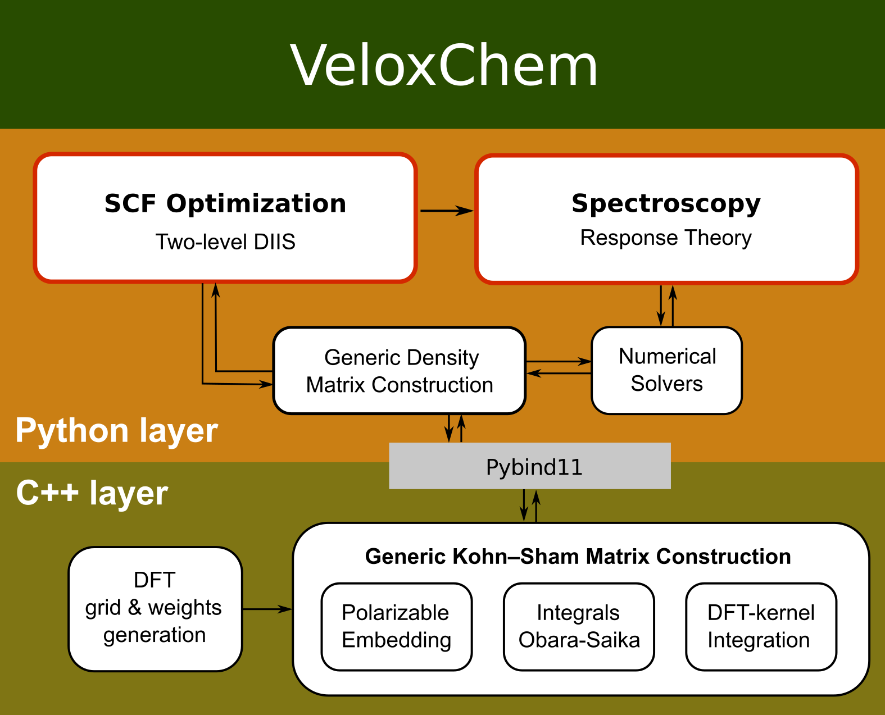

Program structure#
import veloxchem as vlx
The VeloxChem program adopts a layered Python/C++ language structure.
{kind=link}
You can use the standard functions to get a more detailed view of the Python layer. The help function will give you a package description, stating the copyright agreement.
help(vlx)
Help on package veloxchem:
NAME
veloxchem
DESCRIPTION
# VELOXCHEM 1.0-RC3
# ----------------------------------------------------
# An Electronic Structure Code
#
# Copyright © 2018-2022 by VeloxChem developers. All rights reserved.
# Contact: https://veloxchem.org/contact
#
# SPDX-License-Identifier: LGPL-3.0-or-later
#
# This file is part of VeloxChem.
#
# VeloxChem is free software: you can redistribute it and/or modify it under
# the terms of the GNU Lesser General Public License as published by the Free
# Software Foundation, either version 3 of the License, or (at your option)
# any later version.
#
# VeloxChem is distributed in the hope that it will be useful, but WITHOUT
# ANY WARRANTY; without even the implied warranty of MERCHANTABILITY or
# FITNESS FOR A PARTICULAR PURPOSE. See the GNU Lesser General Public
# License for more details.
#
# You should have received a copy of the GNU Lesser General Public License
# along with VeloxChem. If not, see <https://www.gnu.org/licenses/>.
PACKAGE CONTENTS
__main__
aodensitymatrix
aofockmatrix
atomtypeidentifier
batchsize
blockdavidson
c2diis
c6driver
checkpoint
cli
cnadriver
cppsolver
cubicgrid
cubicresponsedriver
denguess
dftutils
distributedarray
environment
errorhandler
excitondriver
features
firstorderprop
forcefieldgenerator
gopdriver
gradientdriver
hessiandriver
inputparser
linearsolver
loprop
lreigensolver
lrsolver
main
mklconf
mmdriver
mmgradientdriver
mointsdriver
molecularbasis
molecularorbitals
molecule
mp2driver
mpitask
nonlinearsolver
numerovdriver
openmmdriver
openmmgradientdriver
optimizationdriver
optimizationengine
orbitalviewer
outputstream
polembed
profiler
pulsedrsp
qqscheme
quadraticresponsedriver
respchargesdriver
rspabsorption
rspc6
rspcdspec
rspcustomproperty
rsplinabscross
rsppolarizability
rspproperty
rspshg
rsptpa
rsptpatransition
sanitychecks
scfdriver
scfgradientdriver
scfhessiandriver
scfrestdriver
scfrestopendriver
scfunrestdriver
seminario
shgdriver
signalhandler
subcommunicators
symmetryanalyzer
symmetryoperations
tdaeigensolver
tddftgradientdriver
tests (package)
tpadriver
tpafulldriver
tpareddriver
tpatransitiondriver
trajectorydriver
treeblock
uffparameters
utils
veloxchemlib
visualizationdriver
xtbdriver
xtbgradientdriver
xtbhessiandriver
FUNCTIONS
ao_matrix_to_dalton(...) method of builtins.PyCapsule instance
ao_matrix_to_dalton(matrix: CDenseMatrix, basis: veloxchem.veloxchemlib.MolecularBasis, molecule: veloxchem.veloxchemlib.Molecule) -> CDenseMatrix
Transforms AO matrix from VeloxChem to Dalton format.
ao_matrix_to_veloxchem(...) method of builtins.PyCapsule instance
ao_matrix_to_veloxchem(matrix: CDenseMatrix, basis: veloxchem.veloxchemlib.MolecularBasis, molecule: veloxchem.veloxchemlib.Molecule) -> CDenseMatrix
Transforms AO matrix from Dalton to VeloxChem format.
available_functionals(...) method of builtins.PyCapsule instance
available_functionals() -> list[str]
Gets a list of available exchange-correlation functionals.
bohr_in_angstrom(...) method of builtins.PyCapsule instance
bohr_in_angstrom() -> float
Gets Bohr value in Angstroms.
bohr_in_angstroms(...) method of builtins.PyCapsule instance
bohr_in_angstroms() -> float
Gets Bohr value in Angstroms.
dipole_in_debye(...) method of builtins.PyCapsule instance
dipole_in_debye() -> float
Gets convertion factor for dipole moment (a.u. -> Debye).
extinction_coefficient_from_beta(...) method of builtins.PyCapsule instance
extinction_coefficient_from_beta() -> float
Gets factor needed for the calculation of the extinction coefficent from the electric-dipole magnetic-dipole polarizability beta.
fine_structure_constant(...) method of builtins.PyCapsule instance
fine_structure_constant() -> float
Gets fine-structure constant.
get_basis_function_indices_for_atom(...) method of builtins.PyCapsule instance
get_basis_function_indices_for_atom(molecule: veloxchem.veloxchemlib.Molecule, basis: veloxchem.veloxchemlib.MolecularBasis, atomIdx: int) -> list[list[int]]
Gets basis function indices for an atom.
hartree_in_ev(...) method of builtins.PyCapsule instance
hartree_in_ev() -> float
Gets Hartree value in electronvolts.
hartree_in_kcalpermol(...) method of builtins.PyCapsule instance
hartree_in_kcalpermol() -> float
Gets Hartree value in kcal/mol.
hartree_in_wavenumber(...) method of builtins.PyCapsule instance
hartree_in_wavenumber() -> float
Gets Hartree value in reciprocal cm.
hartree_in_wavenumbers(...) method of builtins.PyCapsule instance
hartree_in_wavenumbers() -> float
Gets Hartree value in reciprocal cm.
mathconst_pi(...) method of builtins.PyCapsule instance
mathconst_pi() -> float
Gets value of PI constant.
mpi_initialized(...) method of builtins.PyCapsule instance
mpi_initialized() -> bool
Check if MPI has been initialized.
mpi_master(...) method of builtins.PyCapsule instance
mpi_master() -> int
Gets default rank of master MPI process.
new_parse_xc_func = parse_xc_func(...) method of builtins.PyCapsule instance
parse_xc_func(xcLabel: str) -> veloxchem.veloxchemlib.XCFunctional
Converts exchange-correlation functional label to exchange-correlation functional object.
parse_xc_func(...) method of builtins.PyCapsule instance
parse_xc_func(xcLabel: str) -> veloxchem.veloxchemlib.XCFunctional
Converts exchange-correlation functional label to exchange-correlation functional object.
rotatory_strength_in_cgs(...) method of builtins.PyCapsule instance
rotatory_strength_in_cgs() -> float
Gets convertion factor for rotatory strength (a.u. -> 10^-40 cgs).
DATA
__deployed__ = {'author': 'Xin', 'build': '166', 'commit': 'f38722e654...
VERSION
1.0rc3
FILE
/Users/lixin/miniforge3/envs/vlxman/lib/python3.11/site-packages/veloxchem/__init__.py
Classes#
The functionality of VeloxChem is built into the classes it implements. An overview of the available classes is provided with the dir function.
dir(vlx)
['AODensityMatrix',
'AOFockMatrix',
'Absorption',
'AngularMomentumIntegralsDriver',
'AtomBasis',
'AtomTypeIdentifier',
'BasisFunction',
'BlockDavidsonSolver',
'C6',
'C6Driver',
'CircularDichroismSpectrum',
'ComplexResponse',
'CubicGrid',
'CubicResponseDriver',
'CustomProperty',
'DenseMatrix',
'DispersionModel',
'ElectricDipoleIntegralsDriver',
'ElectronRepulsionIntegralsDriver',
'ExcitationVector',
'ExcitonModelDriver',
'FirstOrderProperties',
'ForceFieldGenerator',
'GradientDriver',
'GridDriver',
'HessianDriver',
'InputParser',
'KineticEnergyIntegralsDriver',
'LinearAbsorptionCrossSection',
'LinearMomentumIntegralsDriver',
'LinearResponseEigenSolver',
'LinearResponseSolver',
'LoPropDriver',
'MMDriver',
'MMGradientDriver',
'MOIntegralsDriver',
'MOIntsBatch',
'MolecularBasis',
'MolecularOrbitals',
'Molecule',
'Mp2Driver',
'MpiTask',
'NuclearPotentialIntegralsDriver',
'NumerovDriver',
'OpenMMDriver',
'OpenMMGradientDriver',
'OptimizationDriver',
'OrbitalViewer',
'OutputStream',
'OverlapIntegralsDriver',
'Polarizability',
'QuadraticResponseDriver',
'RespChargesDriver',
'ResponseProperty',
'SADGuessDriver',
'SHG',
'SHGDriver',
'ScfGradientDriver',
'ScfHessianDriver',
'ScfRestrictedDriver',
'ScfRestrictedOpenDriver',
'ScfUnrestrictedDriver',
'Seminario',
'ShgDriver',
'SubCommunicators',
'SymmetryAnalyzer',
'TDAExciDriver',
'TPA',
'TPAFullDriver',
'TPAReducedDriver',
'TdaEigenSolver',
'TddftGradientDriver',
'TpaFullDriver',
'TpaReducedDriver',
'TpaTransitionDriver',
'TwoIndexes',
'VisualizationDriver',
'XCFunctional',
'XCIntegrator',
'XCNewFunctional',
'XCNewIntegrator',
'XTBDriver',
'XtbDriver',
'XtbGradientDriver',
'XtbHessianDriver',
'__builtins__',
'__cached__',
'__deployed__',
'__doc__',
'__file__',
'__loader__',
'__name__',
'__package__',
'__path__',
'__spec__',
'__version__',
'ao_matrix_to_dalton',
'ao_matrix_to_veloxchem',
'aodensitymatrix',
'aofockmatrix',
'assert_msg_critical',
'atomtypeidentifier',
'available_functionals',
'batchsize',
'blockdavidson',
'bohr_in_angstrom',
'bohr_in_angstroms',
'c2diis',
'c6driver',
'checkpoint',
'configure_mkl_rt',
'cppsolver',
'cubicgrid',
'cubicresponsedriver',
'denguess',
'denmat',
'dftutils',
'dipole_in_debye',
'distributedarray',
'environment',
'ericut',
'errorhandler',
'excitondriver',
'extinction_coefficient_from_beta',
'features',
'fine_structure_constant',
'firstorderprop',
'fockmat',
'forcefieldgenerator',
'get_basis_function_indices_for_atom',
'get_basis_path',
'get_qq_scheme',
'get_qq_type',
'gradientdriver',
'hartree_in_ev',
'hartree_in_kcalpermol',
'hartree_in_wavenumber',
'hartree_in_wavenumbers',
'hessiandriver',
'inputparser',
'linearsolver',
'loprop',
'lreigensolver',
'lrsolver',
'mathconst_pi',
'mklconf',
'mmdriver',
'mmgradientdriver',
'moints',
'mointsdriver',
'molecularbasis',
'molecularorbitals',
'molecule',
'molorb',
'mp2driver',
'mpi_initialized',
'mpi_master',
'mpitask',
'new_parse_xc_func',
'nonlinearsolver',
'numerovdriver',
'openmmdriver',
'openmmgradientdriver',
'optimizationdriver',
'optimizationengine',
'orbitalviewer',
'outputstream',
'parse_xc_func',
'print_features',
'profiler',
'qqscheme',
'quadraticresponsedriver',
'respchargesdriver',
'rotatory_strength_in_cgs',
'rspabsorption',
'rspc6',
'rspcdspec',
'rspcustomproperty',
'rsplinabscross',
'rsppolarizability',
'rspproperty',
'rspshg',
'rsptpa',
'sanitychecks',
'scfdriver',
'scfgradientdriver',
'scfhessiandriver',
'scfrestdriver',
'scfrestopendriver',
'scfunrestdriver',
'seminario',
'set_omp_num_threads',
'set_vlxbasispath',
'shgdriver',
'signalhandler',
'subcommunicators',
'symmetryanalyzer',
'symmetryoperations',
'szblock',
'tdaeigensolver',
'tddftgradientdriver',
'tpadriver',
'tpafulldriver',
'tpareddriver',
'tpatransitiondriver',
'uffparameters',
'veloxchemlib',
'visualizationdriver',
'xtbdriver',
'xtbgradientdriver',
'xtbhessiandriver']
Information about a specific class is available from the docstring.
print(vlx.ScfUnrestrictedDriver.__doc__)
Implements spin unrestricted open shell SCF method with C2-DIIS and
two-level C2-DIIS convergence accelerators.
:param comm:
The MPI communicator.
:param ostream:
The output stream.
Methods and properties#
The actual calculations are performed by the methods in the classes. To list the properties and methods of a class, the dir function can be used as follows.
dir(vlx.ScfRestrictedDriver)
['__class__',
'__deepcopy__',
'__delattr__',
'__dict__',
'__dir__',
'__doc__',
'__eq__',
'__format__',
'__ge__',
'__getattribute__',
'__getstate__',
'__gt__',
'__hash__',
'__init__',
'__init_subclass__',
'__le__',
'__lt__',
'__module__',
'__ne__',
'__new__',
'__reduce__',
'__reduce_ex__',
'__repr__',
'__setattr__',
'__sizeof__',
'__str__',
'__subclasshook__',
'__weakref__',
'_apply_mom',
'_check_convergence',
'_comp_2e_fock',
'_comp_2e_fock_single_comm',
'_comp_2e_fock_split_comm',
'_comp_density_change',
'_comp_diis',
'_comp_energy',
'_comp_full_fock',
'_comp_gradient',
'_comp_guess_density',
'_comp_npot_mat_split_comm',
'_comp_number_of_electrons',
'_comp_one_ints',
'_delete_mos',
'_gen_molecular_orbitals',
'_get_acc_type',
'_get_dyn_threshold',
'_get_effective_fock',
'_get_guess_type',
'_get_qq_dyn',
'_get_scaled_fock',
'_get_scf_range',
'_graceful_exit',
'_need_graceful_exit',
'_pe_sanity_check',
'_print_energy_components',
'_print_ground_state',
'_print_header',
'_print_iter_data',
'_print_scf_energy',
'_print_scf_finish',
'_print_scf_title',
'_store_diis_data',
'_update_fock_type',
'_update_mol_orbs_phase',
'_write_final_hdf5',
'comm',
'compute',
'compute_s2',
'density',
'get_scf_energy',
'get_scf_type_str',
'history',
'is_converged',
'maximum_overlap',
'mol_orbs',
'molecular_orbitals',
'nnodes',
'nodes',
'num_iter',
'ostream',
'print_attributes',
'print_keywords',
'rank',
'scf_energy',
'scf_tensors',
'scf_type',
'set_start_orbitals',
'update_settings',
'write_checkpoint']